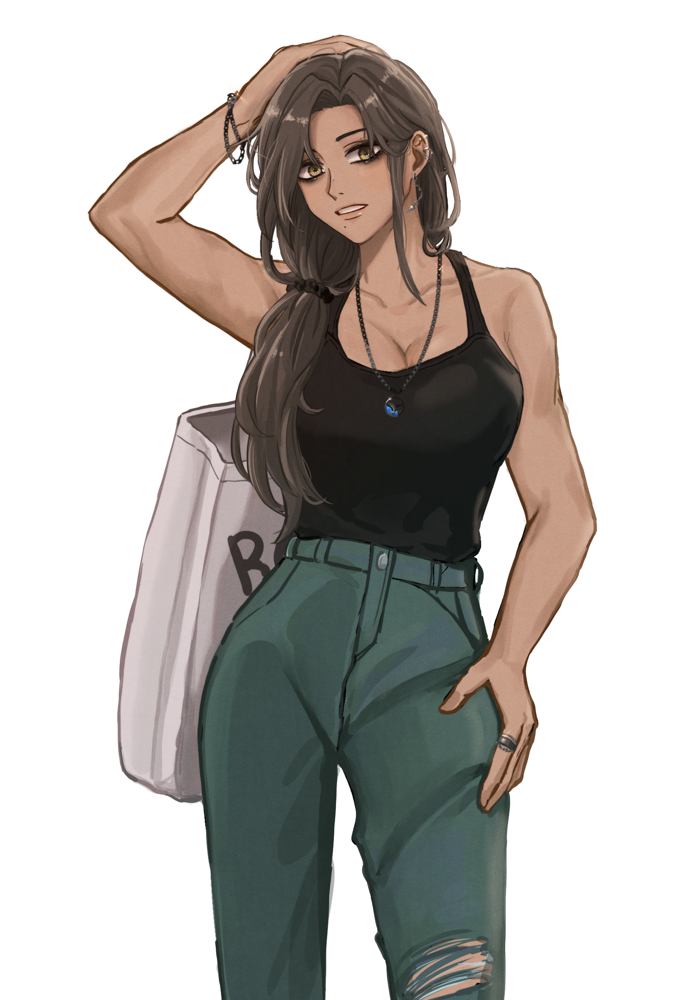

캐치 프레이즈
오천원에 샀어요 만원에 팔아요~ 나는야 사기꾼
한마디
“ 아, 진짜 싸게 주는 거래도 그러네? ”
외관
칠야님 CM
매일 아침 6시 임정역 방향을 타는 이는 검게 탄 피부에 푸석한 갈색머리, 탁한 금빛 눈동자와 진한 다크서클까지… 어느 직장인이 그렇지 않겠냐만은 유독 피곤하고 관리가 되지 않은 기색이 역력했다. 다만 그런 다른 직장인들과의 다른 점이라면 탄탄하게 관리가 된 몸일 것이다.
그는 언제나 비슷한 스타일로, 헐렁하게 묶은 머리나 수수한 에코백과는 상반되는 진한 화장이나 화려한 악세사리들은 사람을 대하고 영업을 해야 하는 판매직이랑은 어쩐지 거리가 멀어보였다.
복장은 바뀌어도 신발은 언제나 백색의 수수한 운동화였는데, 자세히 들여다보면 닳을대로 닳아 구멍이 뚫리지 않은 게 용할 정도였다.
이름
한이지
나이
27
키/체중
172cm/68kg
성격
Keyword: 기회주의, 이기주의, 평화주의
Sub: 털털한, 싸가지없는, 매사에 불만
"내가 그쪽한테만 소개해주는 건데 말이야…"
돈과 기회를 위해서라면 수단과 방법을 안 가리는 이기적인 성격의 소유자.
"속고만 살았나 진짜~"
거짓말을 입에 달고 살아 거리낌 없이 혀를 놀리지만 친절한 성격은 아니기에 나쁘게 말하면 예의가 없는 수준이다.
"손님, 돈 내고 만져."
불평불만이 있는 데다 짜증이 많고, 자기연민과 열등감 역시 있는 부정적인 성격 탓에 친화력이 떨어지고 인간관계가 넓지가 못하다.
한마디로 요약하면 '왕싸가지 사회부적응자' 라는 얘기.
기타
漢易持
8월 31일 | rh+ AB형 | 무남독녀
호: 돈, 할머니, 아침운동, 매월 10일(월급날), 토끼풀, 간단한 내기
불호: 교사, 근손실, 과한 음주, 담배냄새, 매월 15일(월세 내는 날)
특기: 달리기, 구라, 강매
편모가정에 벌이 탓에 유년기부터 청소년기까지 할머니와 시간을 많이 보냈다.
입정역 근처 다단계 회사에 다니며, 직장 내에서 하는 일은 주로 회원 관리 등의 사무업무이나, 가끔 판매(강매)도 하는 모양이다.
하루 루틴
(지하철 탑승 전 일정 포함)
Am 6 - 7 기상 및 아침조깅
Am 7 - 8 출근 준비
Am 8 - 9 지하철(고창역 - 임정역)
Am 9 - Pm 12 오전업무
Pm 12 - 1 점심식사
Pm 1 - 6 오후업무
Pm 6 - 7 퇴근 및 저녁식사
Pm 7 - 10 부업
Pm 10 - 12 X튜브 시청
이후 취침
입정역 - 고창역
(탑승 이후 행동)
운이 좋게 자리에 앉은 것까진 좋았으나, 이어폰을 꽂은 채 X튜브를 시청하다 그대로 잠에 들어버렸고 재난 문자 알림 소리에 눈을 떴을 땐 지하철이 멈춰버렸다.
소지품
영양제, 화장품, 아령
관계
박다인
한이지 회사 회원 중 박다인이 쫒고 있던 마약사범의 발견 계기로 한이지와 박다인은 참고인으로서 첫 대면 하게 되는데... 조사 과정 중 기 싸움은 기본! 서로 물러날 기미 없이 참고인 조사는 해프닝으로 종료됐다. 이후 박다인은 추가적인 마약사범에 우려하여 먼저 연락을 취하곤 했고 여전히 서로 못잡아 먹어 안달났지만 가볍게 신세한탄을 반복하며 문자를 주고 받고 지내고 있다. 누구 마음대로 친구예요?!